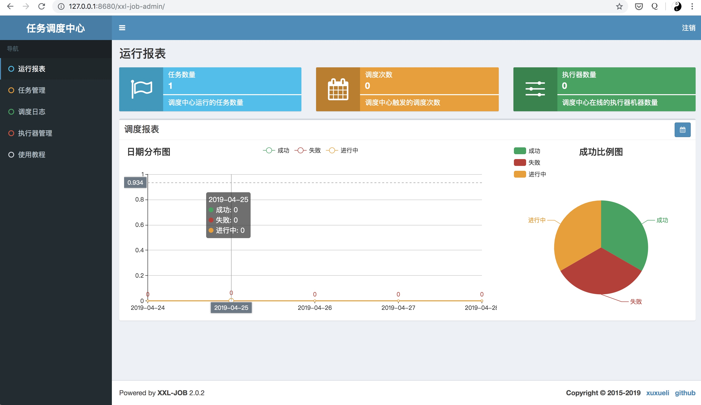

xxl-job在鼎鼎大名的quartz任务调度系统上进行了二次封装，变得更好用了
项目地址：https://github.com/xuxueli/xxl-job
官方文档：http://www.xuxueli.com/xxl-job/#/
虽然官方文档也很全，很详细，但需要多花些时间上手，以下是我根据官方文档整理出的快速上手步骤，可以减少上手需要花费的时间和一些生产使用需要注意的点
在mysql中执行以下sql
tables_xxl_job.sql
这个sql创建xxl-job的数据库和调度任务的表
记下mysql的地址，用户名和密码
使用docker一键启动调度中心
docker run -d --rm \
-e PARAMS="--spring.datasource.url=jdbc:mysql://你的mysql数据库ip:3306/xxl-job?Unicode=true&characterEncoding=UTF-8 --spring.datasource.username=你的mysql数据库用户名 --spring.datasource.password=你的mysql数据库密码" \
-p 8680:8080 \
--name xxl-job-admin xuxueli/xxl-job-admin:2.0.2
在浏览器中使用默认用户名和密码 admin 123456 登陆查看效果

将一个spring boot项目变成一个xxl-job任务的执行器
在现有项目的pom.xml加上xxl-job core依赖
<!-- xxl-job-core -->
<dependency>
<groupId>com.xuxueli</groupId>
<artifactId>xxl-job-core</artifactId>
<version>2.0.2</version>
</dependency>
在现有的配置文件src/main/resources/application.properties文件中添加xxl-job调度中心的配置
### xxl-job admin address list, such as "http://address" or "http://address01,http://address02"
xxl.job.admin.addresses=http://127.0.0.1:8680/xxl-job-admin
### xxl-job executor address
xxl.job.executor.appname=xxl-job-executor-sample
xxl.job.executor.ip=
xxl.job.executor.port=9999
### xxl-job, access token
xxl.job.accessToken=
### xxl-job log path
xxl.job.executor.logpath=logs/xxl-job/jobhandler
### xxl-job log retention days
xxl.job.executor.logretentiondays=-1
然后在spring boot中把xxl job注册成服务，参考: XxlJobConfig.java
核心代码如下：
@Bean(initMethod = "start", destroyMethod = "destroy")
public XxlJobSpringExecutor xxlJobExecutor() {
logger.info(">>>>>>>>>>> xxl-job config init.");
XxlJobSpringExecutor xxlJobSpringExecutor = new XxlJobSpringExecutor();
xxlJobSpringExecutor.setAdminAddresses(adminAddresses);
xxlJobSpringExecutor.setAppName(appName);
xxlJobSpringExecutor.setIp(ip);
xxlJobSpringExecutor.setPort(port);
xxlJobSpringExecutor.setAccessToken(accessToken);
xxlJobSpringExecutor.setLogPath(logPath);
xxlJobSpringExecutor.setLogRetentionDays(logRetentionDays);
return xxlJobSpringExecutor;
}
启动项目，在调度中心查看效果
可以看到我们的执行器上线了
编写任务
用到spring boot了，一般都会在任务中调用spring boot项目的资源，比如 jpa， service， util等
在spring boot项目中创建一个测试任务，比如 TestJobHandler.java
核心代码如下
@JobHandler(value="testJobHandler")
@Component
public class TestJobHandler extends IJobHandler {
private final InService inService;
@Autowired
public TestJobHandler(InService inService) {
this.inService = inService;
}
@Override
public ReturnT<String> execute(String param) throws Exception {
XxlJobLogger.log("XXL-JOB, Hello World.");
for (int i = 0; i < 5; i++) {
XxlJobLogger.log("beat at:" + i);
TimeUnit.SECONDS.sleep(2);
}
inService.xxl();
return SUCCESS;
}
}
其中inService便是spring boot中的一个普通的service
执行任务
然后在调度中心创建任务运行我们刚才创建的任务

点击启动任务，在任务执行代码中断个点查看效果
任务触发成功!
同时可以在调度中心看到执行的记录和日志
一些注意的点
调度中心的JobHandler必须和代码里的JobHandler的值一致才能匹配到执行的任务
cron规则可以通过这个工具cronboot生成
想省去运维成本可以直接使用阿里云的分布式任务调度系统：https://cn.aliyun.com/aliware/schedulerx
生产环节使用要保证任务执行客户端的高可用，开启高可用参考: 执行器集群
调度中心也需要高可用，参考：调度中心集群
一般微服务都在容器里部署，容器部署需要特别注意ip地址，参考：XxlJobConfig.java 的配置